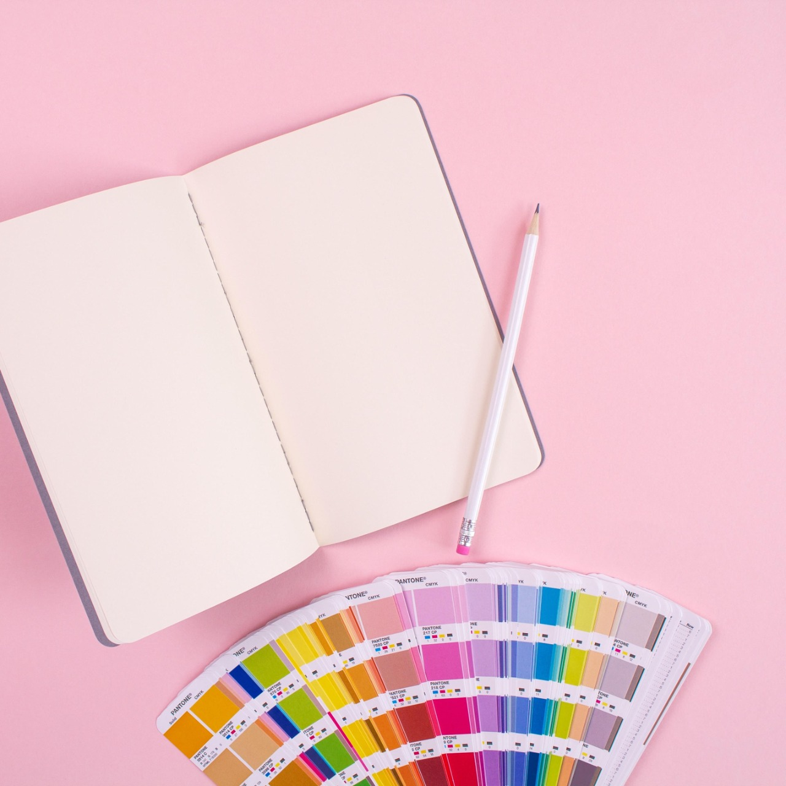

It’s true, our past shapes us. It is through the learnings, experiences, disturbances that we change.
But are we just changing (जैसे की वक़्त का नियम है), or growing to be a better version of ourselves? 🎭
सोचा है, क्या तुमने ये कभी,
सोचा है, की है ये क्या सभी,
सोचा है, सोचा नहीं, तो सोचो अभी 😅
There are not just fifty, but multiple crazy shades of life, people, experiences…some are good, some are bad, some are crazy…but again, what you hold on
to makes you who you are.
Let Go!🙏
Yes, it’s as simple as it looks, because it is your decision to make for yourself.
Why fill your life with dull thoughts when you can add beautiful colours? You are the master of your canvas. 🎨
